마을 생성기를 데이터베이스로 옮기기
지금 마을은 옵션 폼 없이 AI 프롬프트로만 만들어지고, 집 모양·재료·간격·확률이 전부 코드 상수다. 이 문서는 실측한 현재 구조와, 그중 무엇을 어떤 순서로 DB 탭에 올려야 하는지를 정리한다.
- 마을 생성 대화창은 존재하지 않는다. 도구 메뉴·툴바·맵 만들기 프리셋 어디에도 없다. 유일한 버튼인 건축 팔레트
🏘️마을은 결정론 시공을 호출하지 않고, 한국어 프롬프트를 넣은 AI 영역 작업 모달을 자동 실행한다. - 생성기는 프로젝트 데이터를 거의 읽지 않는다. 집 템플릿 34종, 집 킷 6종, 울타리·문·창문 타일 번호, 도로 오토타일 그룹이 모두 코드 상수다. 타일셋 게이트는 의미 준비도가 아니라 이미지 동일성(
combined_town번들 텍스처인가)만 본다. - DB「구조물」탭의 킷은 마을 시공에 쓰이지 않는다.
src/editor/tools/village/8,632줄 전체에structureKit참조가 0건이다. 두 계보가 나란히 존재하고 서로 모른다.
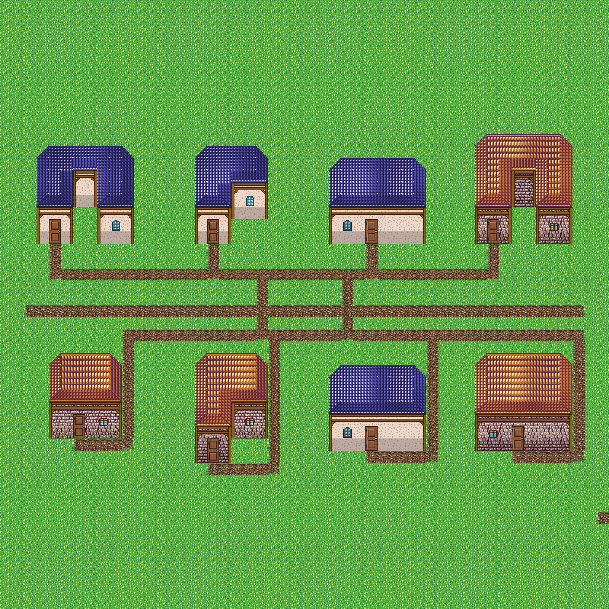
1. 지금 상태 — 실측한 진입점
사용자가 마을을 만들 수 있는 경로를 UI에서부터 역추적했다. 결론은 결정론 생성기에 옵션을 주고 실행할 UI가 없다는 것이다.
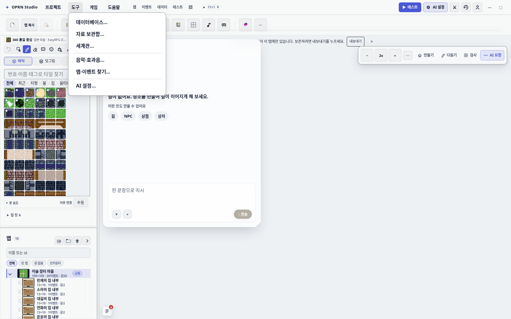
menu.ts:408-420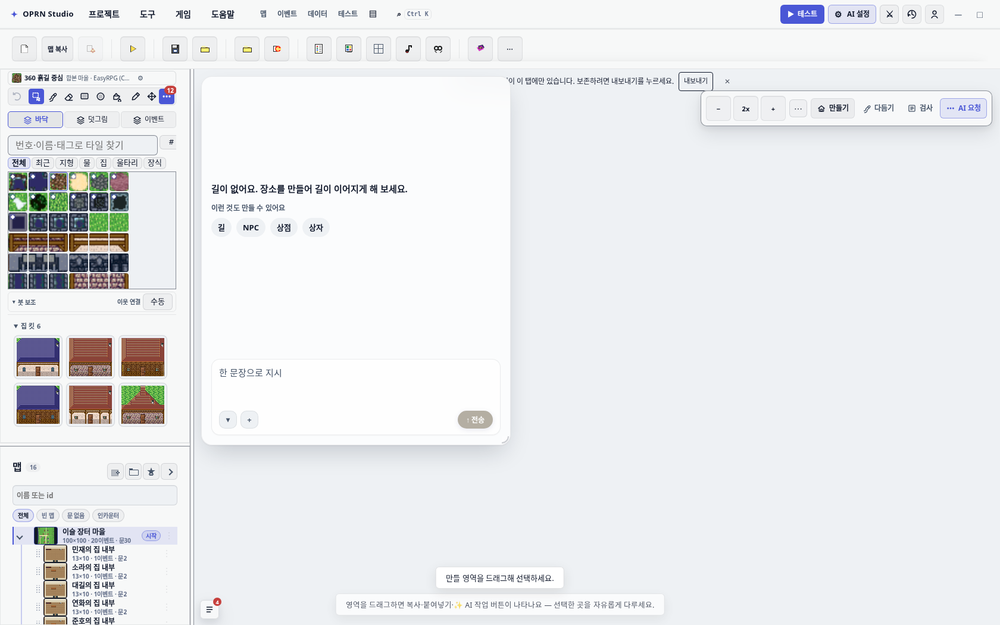
author_village로 내려간다.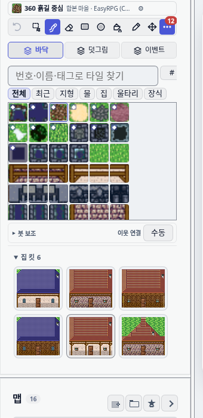
집 킷 6 선반. 킷을 도장처럼 찍는 용도이고 마을 배치와는 무관하다.1-1. 🏘️마을 버튼은 프롬프트 런처다
buildPalette.ts:181-184가 house/village를 결정론 경로 앞에서 가로채
openRegionTaskModal({ autoRun: true, initialInstruction: "선택 영역 안에 여러 집과 연결된 길을…" })로 넘긴다.
의도된 설계이며 test/buildPaletteToggle.test.ts:114-135가 autoRun: true를 단정해 고정하고 있다.
도달 경로도 좁다 — renderBuildPaletteToggle()은 src/ 안에 호출부가 없고, 실제로는 Ctrl/Cmd+K 커맨드 팔레트의
「도구: 건축 팔레트 전환」을 거쳐야 하며 팝업은 맵 선택이 있을 때만 렌더된다.
1-2. 결정론 생성기는 AI 툴로만 열린다
| 경로 | 위치 | 상태 |
|---|---|---|
author_village — 정본 파사드 | authorVillageToolDef.ts:52-158 | 활성 |
generate_map (theme village) | generateMapTool.ts:134-153 | 활성 |
| AI 영역 작업 모달 — "N채 마을" 감지 시 시그니처 주입 | runRegionTask.ts:392-395 | 활성 |
build_village 외 레거시 7종 | village/builder.ts:498-918 | deprecated · LLM에서 숨김 |
개발용 URL 쿼리 ?villageShoppingStreet ?marketTown | devShowcaseProjects.ts:42-43 | 개발용 |
E2E 브리지 window.__oprnBuildPalette | editorToolHook.ts:160-161 | 테스트용 |
author_village의 스키마는 additionalProperties: false인데 default 키가 하나도 없다.
미지정 값은 하류 빌더가 시드 기반으로 해결한다 — 즉 같은 지시를 두 번 줘도 사용자가 볼 수 있는 설정 레코드는 남지 않는다.
필수는 target, houseCount(1–32), countPolicy 셋뿐이고, 알 수 없는 templateId는 거부가 아니라 경고 후 제거된다.
2. 데이터가 지금 어디 있나
생성기 모듈은 src/editor/tools/village/ 12파일 8,632줄 + 상위 5파일이다. 오케스트레이션은 buildVillageDomain
(builder.ts:94-405)이고 시공 순서는 광장 → 대로 예약 → 집 → 길(침범 점검 + 최대 100회 롤백) → 문 복구 → 울타리 →
상점 지정 → 지형 패스 → 소품 → 조경 → 실측 게이트 → 실내 → NPC → 지면 테마 → layoutPlan 저장 → 감사다.
2-1. 코드 상수 목록 (DB로 올릴 후보)
| 무엇 | 어디 | 규모 | DB화 난이도 |
|---|---|---|---|
집 템플릿 HOUSE_TEMPLATES |
village/constants.ts:259-368 |
34종 | 중 — 형태가 함수다 |
집 킷 HOUSE_KITS (벽 나인슬라이스 + 지붕 + 창문 타일) |
houseKit.ts:88-152 |
6종 (믹스 대상 5종) | 낮음 — 순수 데이터 |
| 울타리 8종 / 문 상하 / 창문 2종 / 금지 석재 4종 타일 번호 | village/constants.ts:71-99 |
16개 상수 | 높음 — 라벨 해석으로 바꿔야 |
| 도로·눈 오토타일 그룹 | village/constants.ts:12, roads.ts:70-72, builder.ts:1412 |
흙길·모래·포석·눈 | 높음 — 프로젝트 리졸버 우회 |
규모·간격 상수 (광장 8×6, HOUSE_MARGIN 2, 길 폭 2/3, 집 8채…) |
village/constants.ts:52-68 |
12개 | 낮음 |
| 파생 규칙·확률 (슬롯 좌표 12개, 나무 밀도, 꽃 0.7 / 조각상 0.5 / 바위 0.6…) | houses.ts, decor.ts, plaza.ts, landscape.ts |
25+ 지점 | 중 — 시드 종속 |
| 테마 → 스타일 매핑 (정규식 6분기) | builder.ts:1206-1229 |
6줄 | 낮음 — 표로 딱 맞음 |
| 기본 NPC 이름·대사, 그래픽 참조, 마당 테마 | village/constants.ts:107-163, :370-381 |
10명 / 18개 / 10+5종 | 낮음 |
| 실측 게이트 임계값 (물 30/25칸, 나무 15칸, 룩 0.62/0.55) | builder.ts:273,284, villageEvaluate.ts:444-446 |
5개 | 낮음 |
2-2. 집 템플릿은 데이터가 아니라 함수다
이게 P0의 핵심 걸림돌이다. 인터페이스가 wingsAt(x, y): FootprintWing[]를 들고 있어서
(constants.ts:177-191) 배열을 그대로 JSON으로 옮길 수 없다. 같은 디렉터리의 templates.json은
wingsAt(0,0)을 호출해 전개한 덤프와 정확히 일치하며 — 그 사실 자체가 원점 기준 전개가 가능하다는 증거다.
카탈로그 규칙도 주석에 못 박혀 있다: 층 구간 높이 ≥ 벽 밴드+2 (1층 5 / 2층 7 / 3층 9 / lowWall 4), w ≤ 8,
aframe-*는 h = 벽밴드 + floor((w-1)/2) + 1 정확히.
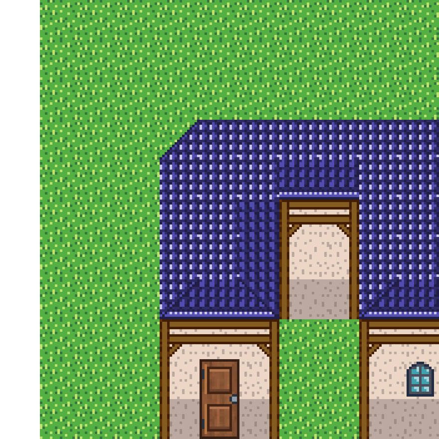
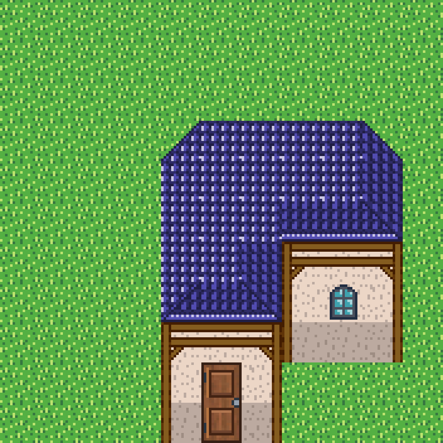
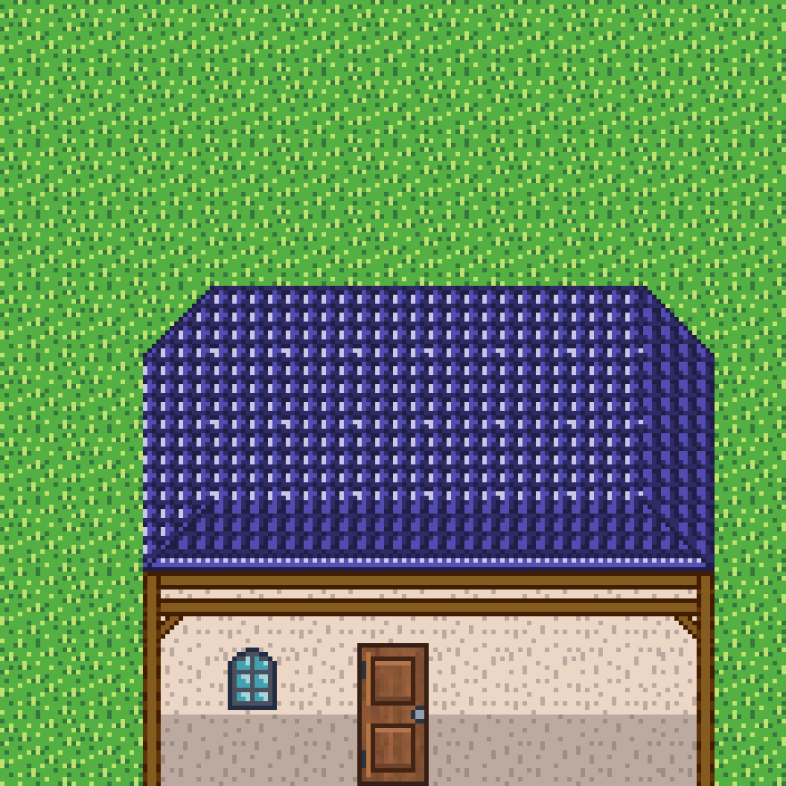
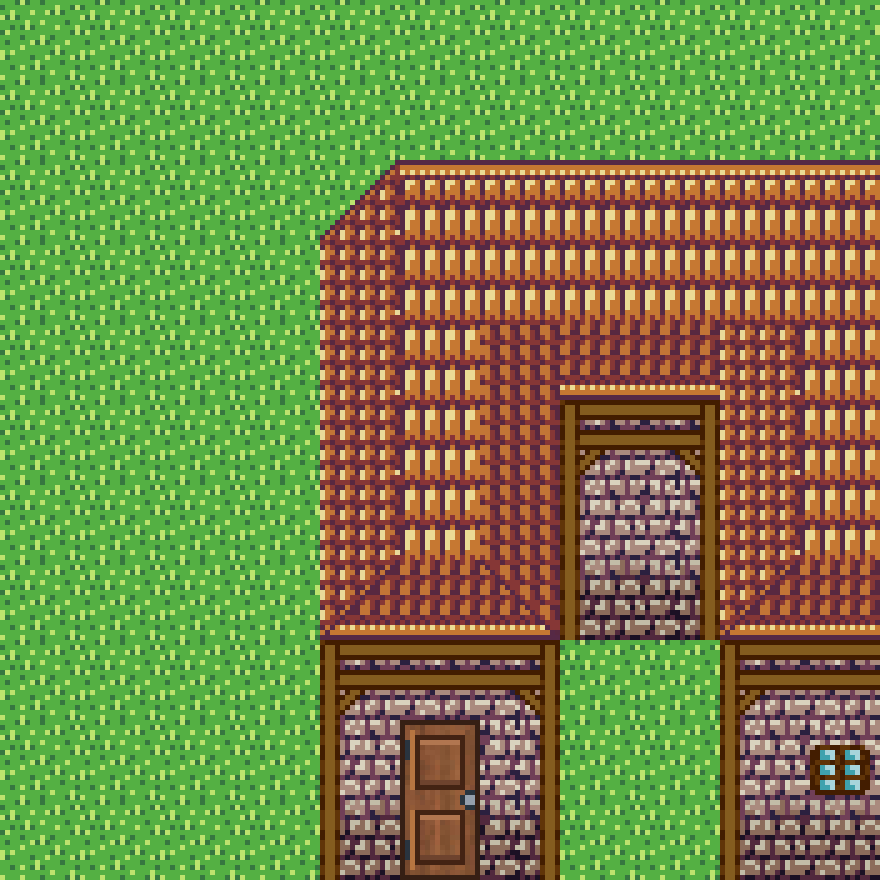
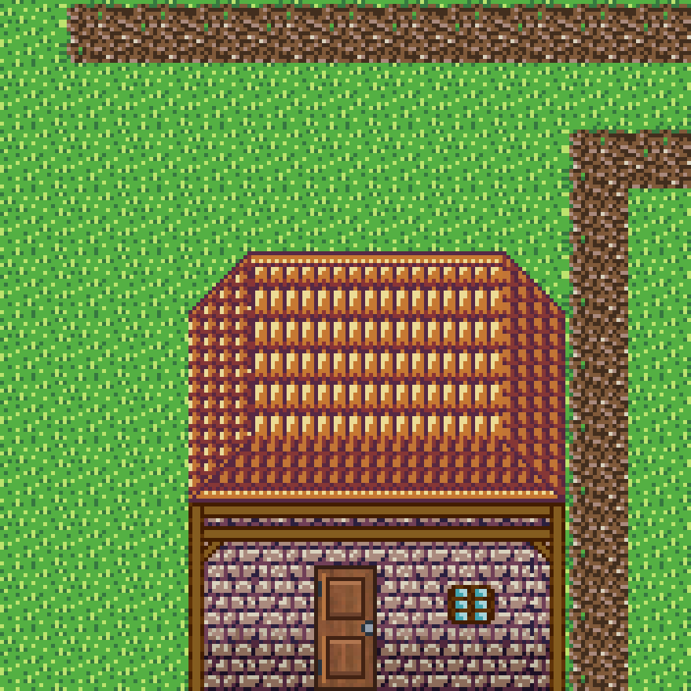
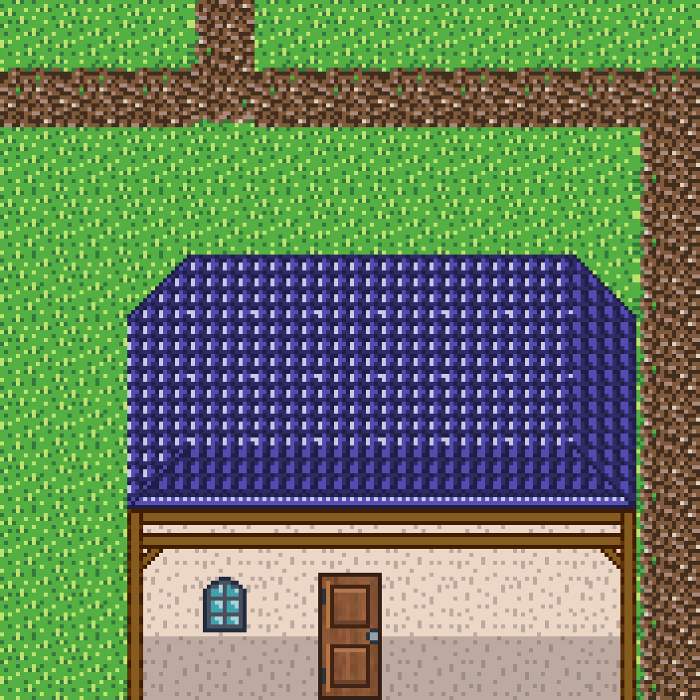
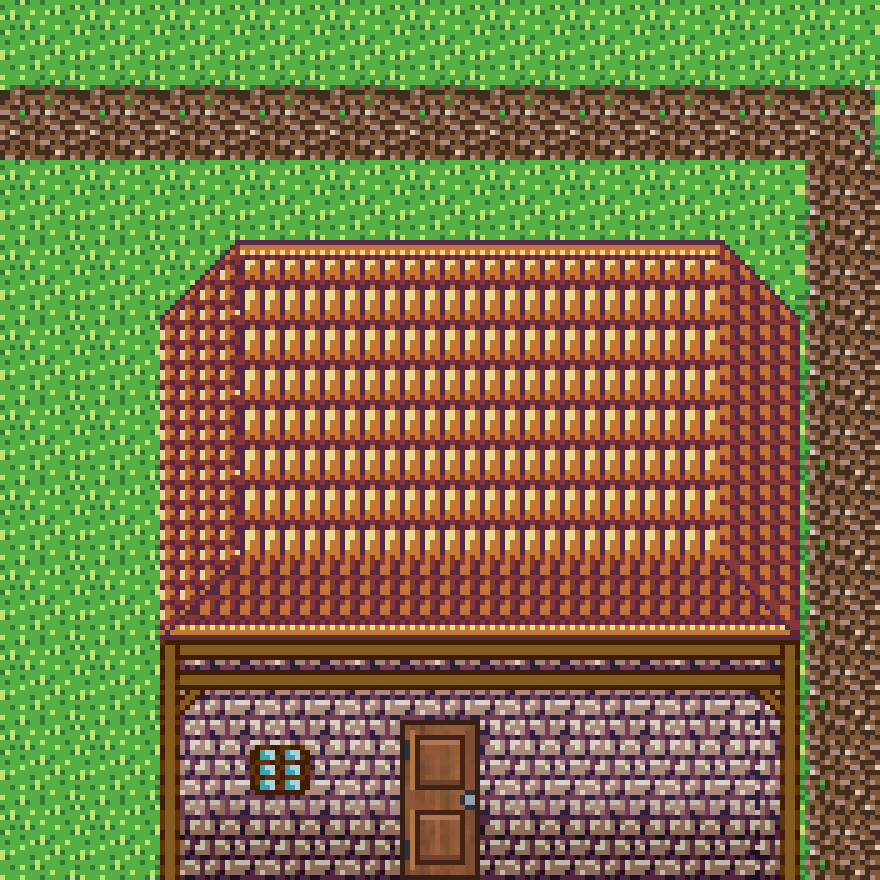
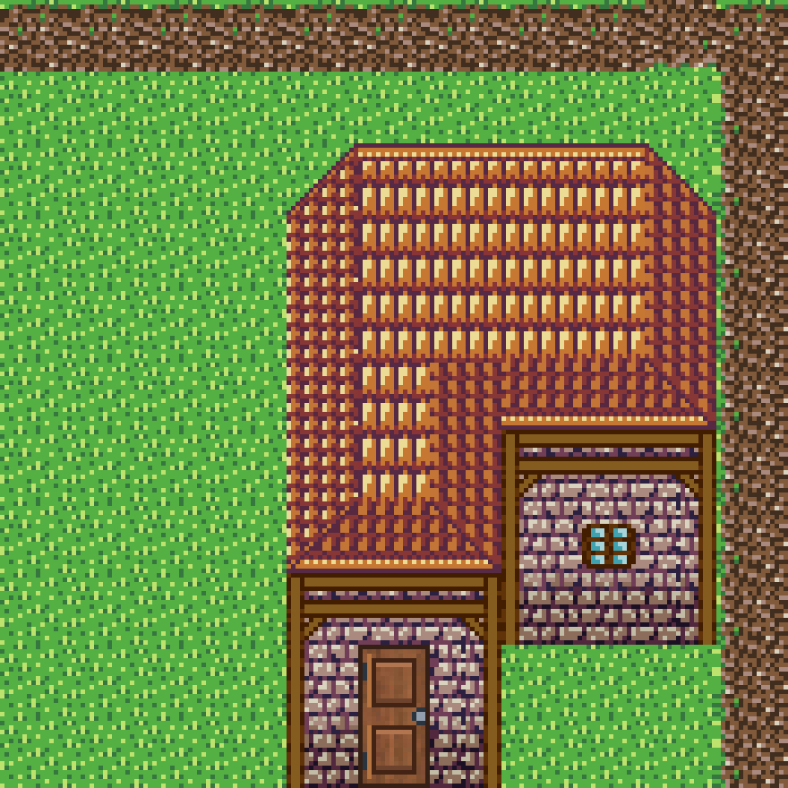
템플릿 계약은 test/houseTemplates.test.ts:31-60이 지킨다 — 30종 이상, id 유일, 전부 빈 맵에 시공 성공,
문이 bbox 최하단 행, 날개가 선언 bbox 안. DB화 후에도 이 테스트가 그대로 통과해야 한다.
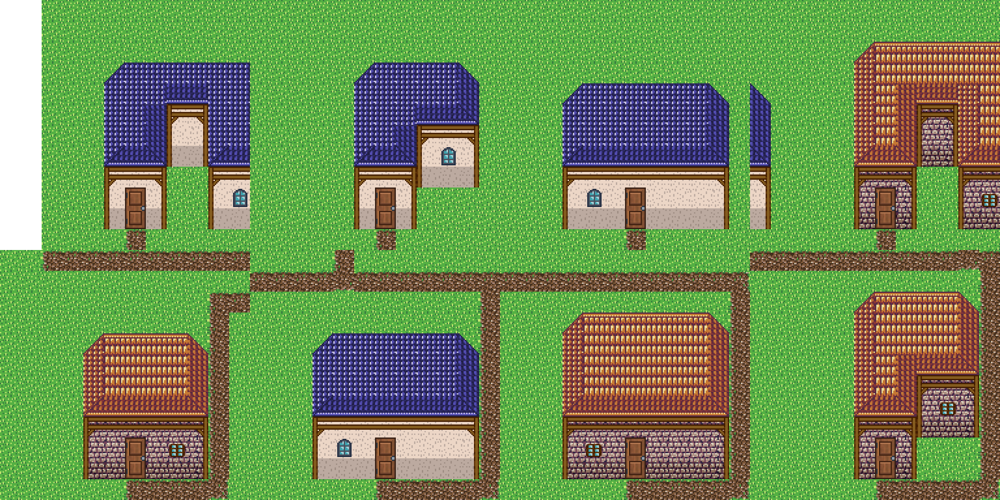
min(3, target), 형태 다양성은 min(8, target, 후보 종류)로 강제된다.2-3. 타일 의미 체계는 있는데 생성기가 안 쓴다
tileMeta(타일별 AI 메타), tileGroups(다중 타일 어휘), palettePresets가 프로젝트 스키마에 있고,
tileVocabulary.ts에 resolveMaterialByLabel·approvedVocabulary·resolveVocabForBuild 같은 해석기가 다 있다.
그런데 village/*.ts 전체에 이들 참조가 0건이다. 간접 경로는 둘뿐이다:
decor.ts:615의 place_props 위임과 villageTerrainPass.ts:114-115의 fill_region.
이 둘만 "장작 더미", "침엽수", "물" 같은 한국어 라벨을 넘긴다.
해석 실패는 조용하다. place_props는 material-not-found를 던지지만
마을 코드가 decor.ts:614-622에서 경고로 삼켜 0개 배치로 넘어간다.
메타데이터가 빈약한 타일셋에서는 소품만 사라지고 집·길·울타리·문은 원시 번호로 계속 찍힌다.
역할 enum TileGroupRole은 building | castle | fence | roof | terrain | water | wall | prop이다.
road와 floor가 없다 — 도로도 바닥도 terrain이다. 마을 재료를 라벨로 결속하려면 이 축이 먼저 필요하다.
360423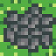
93240290116/146382208/209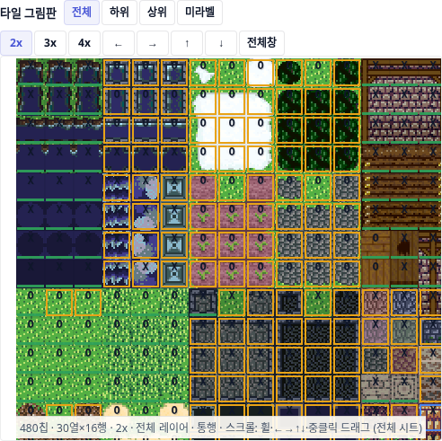
480칩 · 30열×16행 · 2x · 전체 레이어 · 통행이고, 칩마다 통행 표식 O/X와 오토타일 그룹 테두리가 겹쳐 그려진다. 하위탭은 전체 / 하위 / 상위 / 미분류 — 마지막 탭이 라벨 없는 칩을 모으는 큐다. 마을 코드가 참조하는 건 이 격자의 좌표뿐이고, 그래서 텍스처가 바뀌면 전부 다른 그림이 된다.마을 코드가 직접 찍는 원시 타일 번호들. 이 번호가 combined_town 좌표라서 다른 타일셋에서는 전혀 다른 그림이 된다.
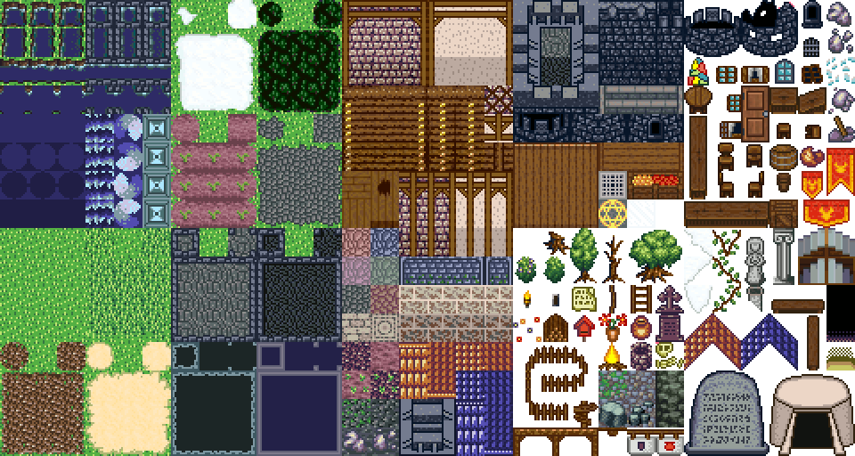
2-4. 준비도 검사기는 있지만 생성기가 다른 게이트를 쓴다
summarizeTilesetGenerationReadiness() — tilesetSemanticChecker.ts:96
역할 존재 여부만 본다 (개수 임계값 없음). house → building, wall, roof, road → terrain 식.
호출부는 에디터 검사기 패널과 유닛 테스트뿐이다.
isCombinedTownTileset() — combinedTown.ts:27-29
image.type === "bundled" && image.id === DEFAULT_TILESET_TEXTURE_KEY.
이미지 동일성 한 줄. 불일치면 village-tileset-mismatch로 throw.
아이러니는 이 방향이 거꾸로라는 점이다. 타일셋의 의미가 데이터에서 오는 게 아니라, 하드코딩된 칩셋 지식에서 생성된다 —
applyCombinedTownHarness가 describeChipsetTile(tile)로 tileMeta를 source: "bundled-default"로 써넣고,
userLocked/source === "user" 항목만 건너뛴다.
실측 메타데이터 커버리지 (interior-tile-benchmark.md, 2026-08-20):
easyrpg_chipset_interior 라벨 480/480 · 오토타일 10,
easyrpg_chipset_dungeon 478/480 · 13,
easyrpg_chipset_combined_town 207/480 · 오토타일 0, 그 외 7종 전부 0.
마을 생성기가 유일하게 지원하는 칩셋이 저장된 오토타일 그룹 0개인 타일셋이다.
단 「오토타일 0」은 저장 데이터 기준이고 런타임 동작은 다르다.
autotileGroupsForTileset()(defaults/autotileGroups.ts:245-255)가
image.id === DEFAULT_TILESET_TEXTURE_KEY일 때 DEFAULT_AUTOTILE_GROUPS 11종
(흙길·모래·포석·경작지·눈·관목·키큰풀·석재광장·자갈광장·어둠 2종)을 폴백으로 병합한다.
custom.length === 0이면 11종 전부, 아니면 멤버가 겹치지 않는 것만 보탠다.
즉 합본 마을은 그룹 0개로 저장되지만 11개로 동작한다 — 그리고 이 폴백의 판정식이
isCombinedTownTileset()과 같은 이미지 동일성 한 줄이다.
다른 타일셋으로 갈아타면 생성기 게이트와 오토타일 폴백이 동시에 죽는다.
단 현재 에디터의 「합본 마을」 히어로 배지는 라벨 243/480을 표시한다(아래 스크린샷). 위키 표가 2026-08-20 실측이므로 그 사이 36칸이 라벨링된 것으로 보인다 — 그래도 절반 이하다. 계획을 세울 때는 위키 숫자가 아니라 배지를 기준으로 삼는 게 맞다.
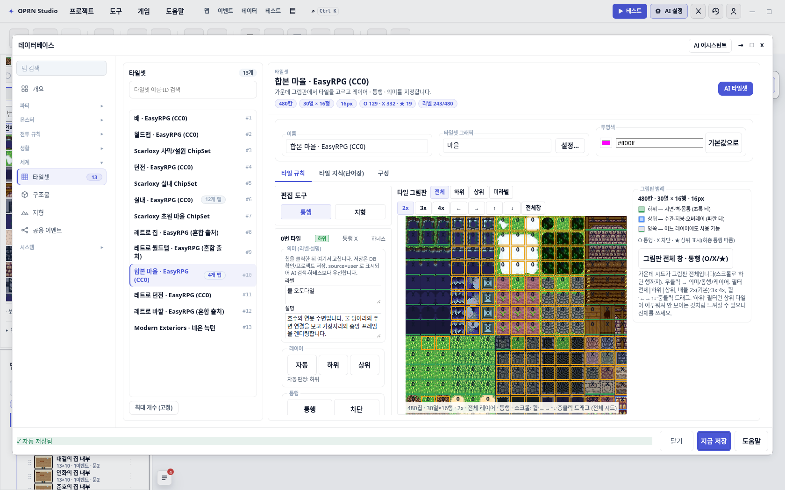
480칸 · 30열 × 16행 · O 129 · X 332 · ★ 19 · 라벨 243/480을 그대로 보여준다.
마을이 원시 번호를 버리려면 이 배지가 480/480에 가까워져야 한다. 왼쪽 목록의 4개 맵 칩과 최대 개수 (고정) 버튼도 이 탭의 관례다.
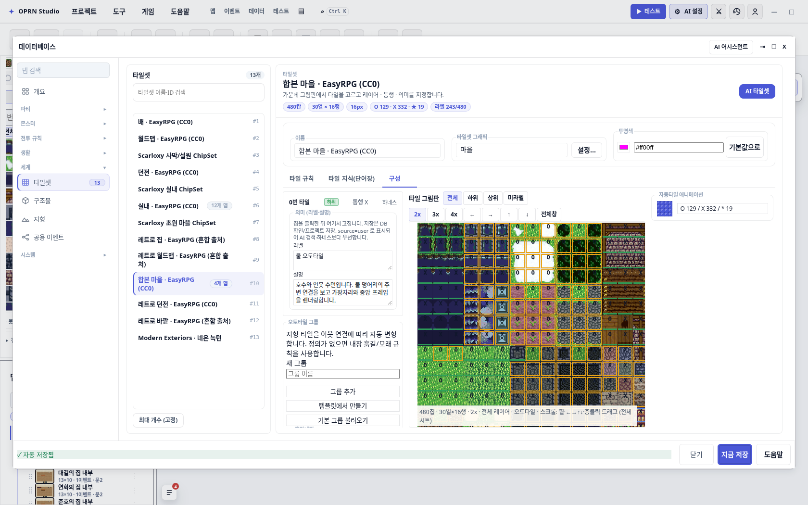
오토타일 그룹 패널이 정의가 없으면 내장 흙길/모래 규칙을 사용합니다라고 폴백을 명시하고,
그룹 추가 · 템플릿에서 만들기(앵커 번호 하나로 RM2K 3×4/3×3/3×2/애니 물 생성) ·
기본 그룹 불러오기(내장 11종을 편집 가능한 사본으로 복제, seedDefaultAutotileGroups)를 준다.
내장 그룹은 목록에 내장 배지와 함께 읽기 전용으로 뜬다 — 구조물 탭과 같은 빌트인/사용자 축이다.
오른쪽 자동타일 애니메이션 필드는 스텁이다. 빈 스와치 하나와
passageSummary()가 만든 O 129 / X 332 / * 19, 즉 히어로 배지의 통행 집계를 그대로 다시 출력한다
(tilesetSettingsDetails.ts:130-151). 애니메이션 데이터와 무관한 문자열이 애니메이션 범례 아래 놓여 있다.
2-5. 프로젝트에 저장되는 것과 저장되지 않는 것
| 무엇 | 필드 | 계약 |
|---|---|---|
| 시공 결과 설계도 (광장·집 region, kitId, doorAt, roadAnchors, seed) | GameMap.layoutPlan |
정식 위키가 보존을 요구 |
| 여관 간판 이식 | TilesetDef.tileGrafts[] | 정식 |
| 마을 계획·스펙 문서 | project.villagePlans / villageSpecs |
미계약 타입·검증·참조검사 어디에도 없음 |
| 생성기 설정 (houseCount, theme, pathStyle, 확률…) | — | 저장되지 않음 |
villagePlan.ts:353-372가 Project를 캐스팅해 선언되지 않은 필드에 계획을 붙인다.
serialize()가 객체 전체를 JSON.stringify하고 validateProjectV4가 통째로 복제하므로
왕복 저장에서 살아남는다 — 실제로 dew-village-demo.json:152578에 "villagePlans"가 들어 있다.
검증도 마이그레이션도 없는 데이터가 프로젝트 JSON에 축적되는 상태다.
3. 기존 DB 표면 — 무엇을 재사용할 수 있나
새 탭을 만들기 전에, 이미 있는 네 표면이 마을 데이터를 받을 수 있는지 확인했다.
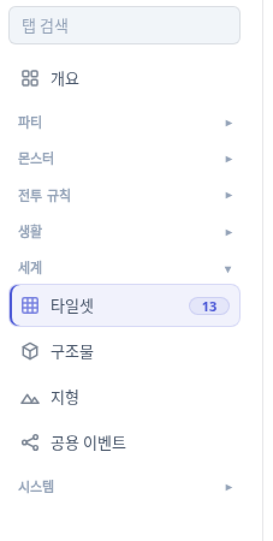
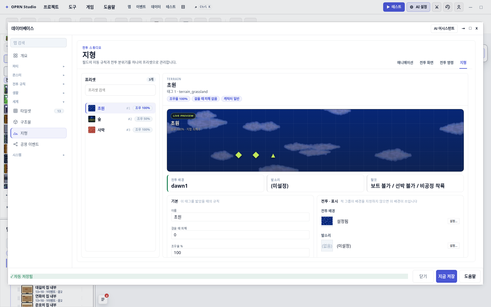
| 표면 | 담는 것 | 마을 데이터를 받을 수 있나 |
|---|---|---|
| 타일셋 — 하위탭 3개 (타일 규칙 / 타일 지식 / 구성) | 타일별 통행·의미 라벨, 오토타일, 팔레트 프리셋 | 재료 결속의 상류 여기 라벨이 채워져야 마을이 번호를 버릴 수 있다. 마을 설정 자체는 부적합 |
| 구조물 | 타일셋별 굽힌 래스터 킷 9×8 (rows), 부위·AI 메타 단 내장 6종은 둘 다 비어 있다 — 화면에 부위 없음, AI 메타가 아직 없습니다 |
부분 파라메트릭 템플릿을 담을 수 없다. 타일셋 종속이라 배치 규칙도 부적합 |
| 지형 | 전투 이동 규칙·전투 배경·발소리 프리셋 | 부적합 전투 스튜디오 소속. 여기 얹으면 의미 충돌 |
| 공용 이벤트 | 재사용 이벤트 | 무관 |
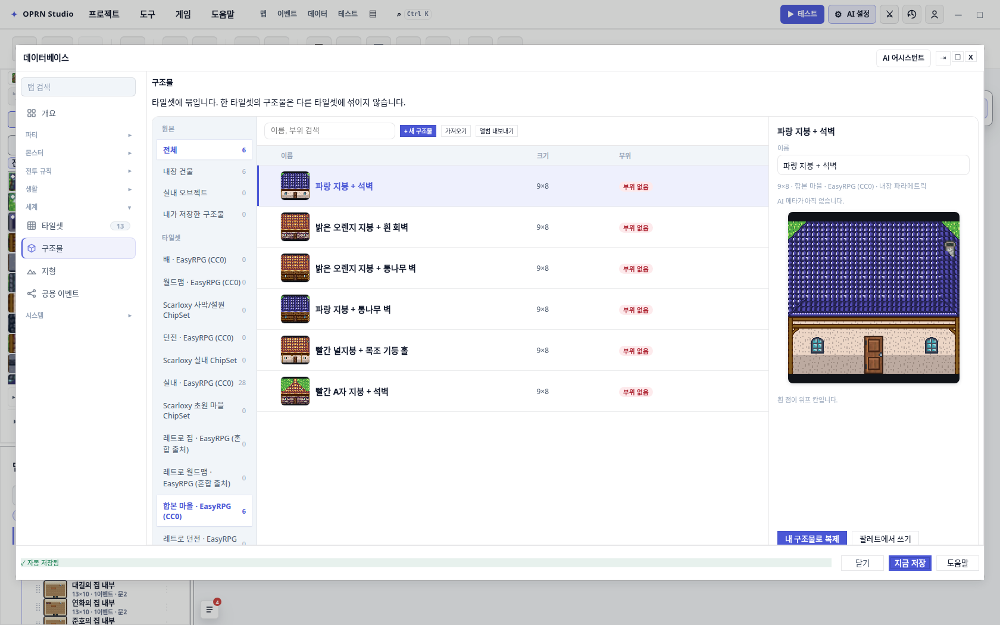
전체 6 / 내장 건물 6 / 실내 오브젝트 0 / 내가 저장한 구조물 0, 그 아래가 타일셋별 목록이다(합본 마을 6, 실내 28, 나머지 0). 킷 6종이 houseKit.ts의 id 순서와 이름까지 일치한다 — 파랑 지붕+석벽(blue-stone) … 빨간 A자 지붕+석벽(aframe-stone). 전부 9×8이고 부위 열이 전부 부위 없음이다. 내장 항목 인스펙터는 편집·삭제를 렌더하지 않고 내 구조물로 복제·팔레트에서 쓰기 둘만 둔다.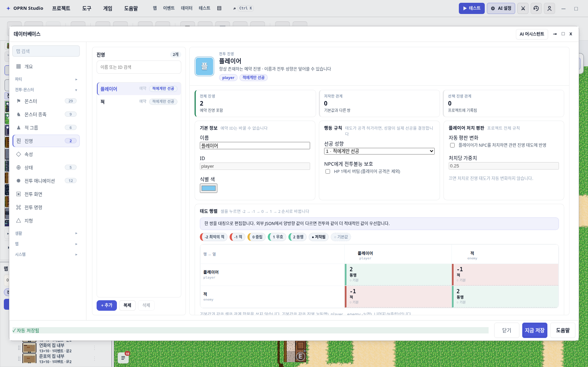
ID는 바꿀 수 없습니다로 잠그고 이름만 열어두며, 행렬 셀마다 저작됨/기본값을 표시해 내장값과 사용자값을 한 화면에서 구분한다. 상단 카드가 전체 진영 2·저작한 관계 0으로 「기본값과 다른 쌍」만 세는 것도 같은 발상이다. 이 탭이 바로 DATABASE_TAB_SPECS 29개에서 빠진 그 탭이다 — 모달 크기 스윕이 여기를 안 지난다.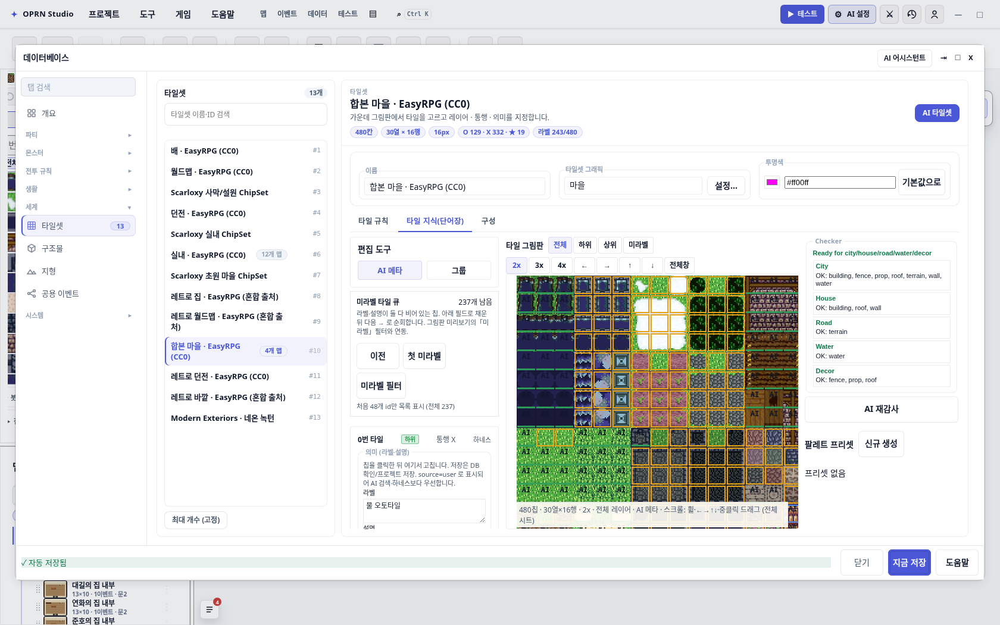
237개 남음(= 480 − 243, 배지와 일치)인데 검사기는 Ready for city/house/road/water/decor 5역할 전부 OK다 — 2-4에서 말한 「존재만 보고 개수는 안 보는」 검사가 화면으로 확인된다. 마을이 번호를 버리려면 이 큐가 비워져야 한다. 검사기 패널만 문자열이 전부 영어 하드코딩이다(tilesetCheckerSummary.ts:11-34).3-1. 그대로 베껴 쓸 패턴
- 빌트인/사용자 축 — 구조물 탭은
source === "user"로만 편집 가능을 판정한다. 계보(learnedFrom)로 판정하면 내장 킷을 내보냈다 다시 가져올 때 영구 잠긴 유령이 생긴다는 주석이 붙어 있다. 마을 템플릿도 같은 축을 써야 한다. - 오버라이드는 굽기 — 복제가 원본을 참조하지 않고 전개해 새 레코드로 넣는다. 코드 상수가 바뀌어도 사본은 그대로.
- 제로 부트스트랩 — 어떤 자동 경로도
origin: "user"를 만들지 않는다. AI 초안은 폼만 채우고 사용자가 「수락」을 눌러야store.update가 일어난다. - 공용 프리미티브 —
databaseWorkspace.ts의workspaceShell/listPane/detailPane/sectionCard/inspectorTabs로 조립한다. 구조물 탭은 이걸 안 쓰고 손조립한 예외이고, 그 파일 머리 주석이 손조립에서 나온 P0 다섯 건을 열거하고 있다. 타일셋·진영 쪽을 본받고 구조물 쪽 손조립은 복제하지 않는다.
3-2. 상태 관리 계약
immer도 훅도 없다. 읽기는 store.getCurrent(), 쓰기는 store.update(draft => …)이고 내부는
structuredClone + 정규화 4종이다. 렌더 캐시 무효화 경계가 Project 객체 아이덴티티라서 해싱이 필요 없다.
스냅샷은 구조 변경 recordProjectSnapshot, 필드 변경 recordCoalescedSnapshot으로 갈린다.
열린 모달은 rAF 디바운스 + 편집 중 스킵 + 400ms 상호작용 유예로 포커스를 지키므로, 키스트로크마다 store.update를 발화해도 안전하다.
4. 제안 — 「마을」탭 하나, 섹션 셋
새 탭 하나를 「세계」그룹의 구조물과 지형 사이에 넣는다. 제안 id villages, testid db-tab-villages, 라벨 「마을」.
구조물 탭 확장이 아닌 이유는 두 가지다 — 구조물은 타일셋 종속인데 마을 배치 규칙은 아니고, 구조물의 킷은 굽힌 래스터인데 마을이 필요한 건 파라메트릭 형태다.
집 템플릿
형태 문법 34종 + 사용자 템플릿. 필드는 w, h, stories, lowWall, roofDeck,
kitId, wings[]. 인스펙터에 실제 시공 미리보기.
내장은 읽기 전용, 「내 템플릿으로 복제」로만 편집.
참조만 하고 중복 저장하지 않는다 — kitId는 집 킷을, 구조물 탭 레코드는 별개로 둔다.
배치 프리셋
지금 시드로 몰래 결정되는 값들을 이름 붙은 레코드로 승격한다.
집 수, 광장 크기, HOUSE_MARGIN, 길 폭·굽이 정도, settlementLayout,
나무 밀도, 꽃·조각상 확률, 실측 게이트 임계값.
여기서 「설정이 저장되지 않는다」 문제가 해결된다 — 프리셋 id를 layoutPlan에 남기면 재현이 된다.
재료 결속
마을이 쓰는 재료 슬롯(길·모래·포석·잔디·울타리·문·창문·나무·물)을
원시 번호가 아니라 타일셋의 라벨/그룹 참조로 잇는다.
슬롯별 해석 상태를 승인 / 약함 / 없음으로 표시.
다른 타일셋을 해금하는 유일한 길이다. 여기가 채워지면 combined_town 게이트를 준비도 검사로 바꿀 수 있다.
담지 않는 것
- 시공 결과 —
layoutPlan은 맵에 남는 산출물이다. DB 탭은 입력만 다룬다. - 타일별 라벨 편집 — 타일셋 탭의 일이다. 재료 결속 섹션은 미해석 슬롯을 가리키고 타일셋 탭으로 보낸다.
- NPC 인물 데이터 — 생활·캐릭터 쪽 계보다. 마을 탭은 기본 NPC 수·이격만 갖는다.
- 실행 버튼 — 옵션 폼과 실행은 맵 편집기 쪽 UI로 남긴다. DB는 프리셋 저장소다.
라벨 충돌.「마을」탭은 레일에서 「지형」바로 위에 서는데, 그 지형은 전투용이다. 이미 있는 혼선이고 마을 탭이 추가되면 「지형 = 마을 지형?」 오해가 커진다. 탭 추가와 함께 전투 지형 탭을 전투 규칙 그룹으로 옮기는 걸 같이 검토할 만하다 — 별건이지만 같은 레일을 건드린다.
5. 막는 것 다섯
| # | 문제 | 영향 | 해법 |
|---|---|---|---|
| 1 | 템플릿 형태가 wingsAt() 함수다 |
섹션 1을 막는다 | 원점 전개 후 선언형 wings[]로 정규화. templates.json이 이미 그 전개형이라 스키마 초안으로 쓸 수 있다. 계약 테스트가 회귀를 잡아준다 |
| 2 | 타일셋 게이트가 이미지 동일성 | 섹션 3의 목적을 무의미하게 만든다 | 결속이 충족된 타일셋을 허용하도록 게이트를 준비도 기반으로 교체. summarizeTilesetGenerationReadiness가 이미 있다 |
| 3 | 오토타일이 프로젝트 리졸버를 우회 | 사용자 정의 그룹이 마을에 반영 안 됨 | village/의 DEFAULT_*_AUTOTILE_GROUP 직접 import를 autotileGroupsForTileset() 조회로 교체 |
| 4 | combined_town 라벨 커버리지 43%, 오토타일 0 |
결속 섹션이 처음부터 절반 빈 상태로 보인다 | 번들 타일셋 라벨 보강을 별 트랙으로. 결속 섹션은 미해석 슬롯을 정직하게 표시하고 폴백 번호를 유지 |
| 5 | villagePlans/villageSpecs가 미계약 필드 |
검증·마이그레이션 없이 프로젝트 JSON에 축적 | 타입에 선언하고 검증·참조검사에 넣거나, 세션 백으로 밀어내 직렬화에서 제외. 새 탭 데이터를 같은 방식으로 붙이지 않는 게 최소 조건 |
6. 단계
데이터화 — UI 없음
템플릿 34종과 킷 6종을 src/project/defaults/의 선언형 상수로 옮긴다. 스키마를 types/에 선언하고
정규화·검증·참조검사에 등록한다. 생성기는 여전히 상수를 읽지만 모양이 데이터가 된다.
test/houseTemplates.test.ts와 test/villageBuilder.test.ts가 통과 유지되면 성공.
산출: 스키마 + defaults + 마이그레이션. 사용자에게 보이는 변화 없음.
「마을」탭 — 읽기 전용 카탈로그
탭을 등록하고 섹션 1을 뜬다. 내장 34종 목록 + 인스펙터 미리보기 + 「내 템플릿으로 복제」.
공용 프리미티브로 조립하고 구조물 탭의 source 축을 그대로 쓴다.
카운트 배지는 사용자 템플릿 수(0이면 배지 없음).
산출: 탭 5지점 등록 + 아이콘 + 뷰 파일 + 유닛 테스트 + e2e 스펙 등록 + 위키 절.
배치 프리셋 — 쓰기 시작
섹션 2를 붙이고 author_village 스키마에 presetId를 추가한다.
빌더의 시드 파생 기본값이 프리셋 값을 존중하도록 바꾸고, 사용한 프리셋 id를 layoutPlan에 기록해 재현 가능하게 만든다.
템플릿 + 킷 → 구조물 굽기 다리도 여기서 놓을 수 있다(구조물 탭 복제의 역방향).
산출: 프리셋 스키마 + 빌더 기본값 경로 수정 + 재현성 테스트.
재료 결속 — 타일셋 해금
섹션 3을 붙이고 village/의 원시 번호·오토타일 직접 import를 결속 조회로 교체한다.
게이트를 준비도 기반으로 바꾼다. TileGroupRole에 road 축이 필요한지 이 단계에서 판단한다.
산출: 결속 스키마 + 리졸버 배선 + 게이트 교체. 회귀 판정은 벤치마크의 structural 스킴(타일 id 무시, 집으로 성립하는가)을 쓴다.
0→1이 가장 안전한 절단면이다. 0단계만 끝내도 「형태가 함수라서 DB화 불가」라는 근본 제약이 사라지고, 1단계는 쓰기 없이 탭 골격과 테스트 배선을 검증한다. 실질 위험은 3단계에 몰려 있다.
7. 새 탭 추가 체크리스트
가장 최근 실사례가 factions 탭이지만 그 커밋은 6그룹·SVG 아이콘 개편 전이라 항목이 더 적었다. 아래는 현재 코드 기준이다.
필수 — 컴파일·테스트가 잡아준다
| # | 파일 | 변경 |
|---|---|---|
| 1 | panels/database.ts | DatabaseTab 유니온 · tabs 메타 배열(한국어 라벨의 유일한 출처) · TAB_GROUPS의 world · databaseTabCount case · renderActiveTab switch case |
| 2 | panels/databaseTabIcons.ts | TAB_ICONS 엔트리. Record<DatabaseTab, …>라 누락은 컴파일 에러. 22×22 viewBox, stroke="currentColor", 색 리터럴·이모지 금지 |
| 3 | 새 panels/databaseVillageView.ts | render…Tab(host, rerender). databaseWorkspace.ts 프리미티브 사용 |
| 4 | test/databaseSidebarNav.test.ts | EXPECTED_TABS에 순서까지 정확히 삽입 + 개수 리터럴 2곳 |
| 5 | test/databaseSidebarKeyboard.test.ts | TAB_TESTID 맵 |
| 6 | test/databaseTabIcons.test.ts | 개수 리터럴 2곳 |
| 7 | test/e2e/oprn-database-helpers.ts | DATABASE_TAB_SPECS에 {label, slug, testId} |
상황에 따라
- 탭 전용 CSS — 뷰 파일에서
import하는 게 최근 관례(진영 방식). 추가 시npm run gates:css예산 게이트를 통과해야 하고--save-baseline은 래칫을 영구히 푸니 쓰지 않는다. - 레코드 컬렉션 탭이면
databaseModal.ts의RECORD_TAB_COLLECTIONS— AI 컨텍스트의 선택 레코드 조각. 탭 라벨은 자동으로 실린다. - 초보 모드 6탭에 넣을 경우만
COMMON_TAB_IDS+test/databaseNavMode.test.ts. - 스키마 추가 시 정규화 화이트리스트 ·
io/references.ts·dbTools.ts스키마를 같이. openwiki/editor-database.md에 절 추가 — stable id/testid, 소속 그룹과 순서, 편집하는 필드와 않는 필드, count 산식, 스냅샷 정책, 커버리지 테스트 나열. 검증은npm run openwiki:verify. 견본은 구조물 탭 절이 가장 좋다.
이 영역이 이미 터뜨린 함정
- 레일 DOM은 평면이다. 그룹 접기는 형제
.db-tab의hidden토글이고 탭 검색이header.children을 직접 걷는다 — 탭을 컨테이너로 감싸면 둘 다 깨진다. el()은text를 먼저 배정하고children을 나중에 append한다 → 아이콘+라벨은children: [icon, label]로만 넣는다.- 그룹 헤더는
DIV여야 하고, 접기 chevron은 CSS::after여야 한다(textContent단정). - 모달 창 geometry는
sidebar.css의 선택자 하나만 선언한다. 탭 콘텐츠 선택자로 다시 선언하면 탭 전환 때 창이 튄다 — e2e가 모든 탭을 3해상도로 걸으며 delta 0을 강제. - 탭 간 점프는
switchDatabaseActiveTab()만 쓴다.openDatabaseModal()재호출은 G006 위반(dirty 기준선·선택 상태 소실, 리스너 누수). markDetailForm위치를 잘못 잡으면 스크롤 컨테이너가 둘 생긴다..db-ws-detail-body가 유일한 스크롤러다.
실측 드리프트 — 새 탭도 같은 식으로 조용히 빠질 수 있다.
test/e2e/oprn-database-helpers.ts의 DATABASE_TAB_SPECS는 29개로 factions가 빠져 있다.
반면 test/databaseSidebarNav.test.ts는 30개다. 즉 진영 탭은 모달 크기 불변 스윕과 감사 매트릭스에서
한 번도 검사되지 않는다. 유닛 테스트가 이 배열을 참조하지 않으므로 자동으로 잡히지 않는 종류의 누락이다.
마을 탭 작업 때 같이 고치는 게 좋다.
8. 확인하지 못한 것
templates.json을 생성한 스크립트를 찾지 못했다. 내용이HOUSE_TEMPLATES를wingsAt(0,0)으로 전개한 것과 정확히 일치하는 건 확인했지만, 생성 경로는 추정이다. 이 디렉터리 전체가 untracked다.- 빌드·테스트를 실행하지 않았다(읽기 전용 조사). 라인 번호는 HEAD
d7cd370a기준이고 이 워크트리는 다른 세션과 공유되므로 어긋날 수 있다. villagePlans가 실제 원격 저장 왕복에서도 살아남는지는 직렬화 코드로만 추론했다. 라이브 왕복은 확인하지 않았다.- 「마을」이라는 탭 라벨이 최종안인지는 결정 사항이다. 전투 지형 탭과의 혼선을 어떻게 정리할지에 따라 달라진다.
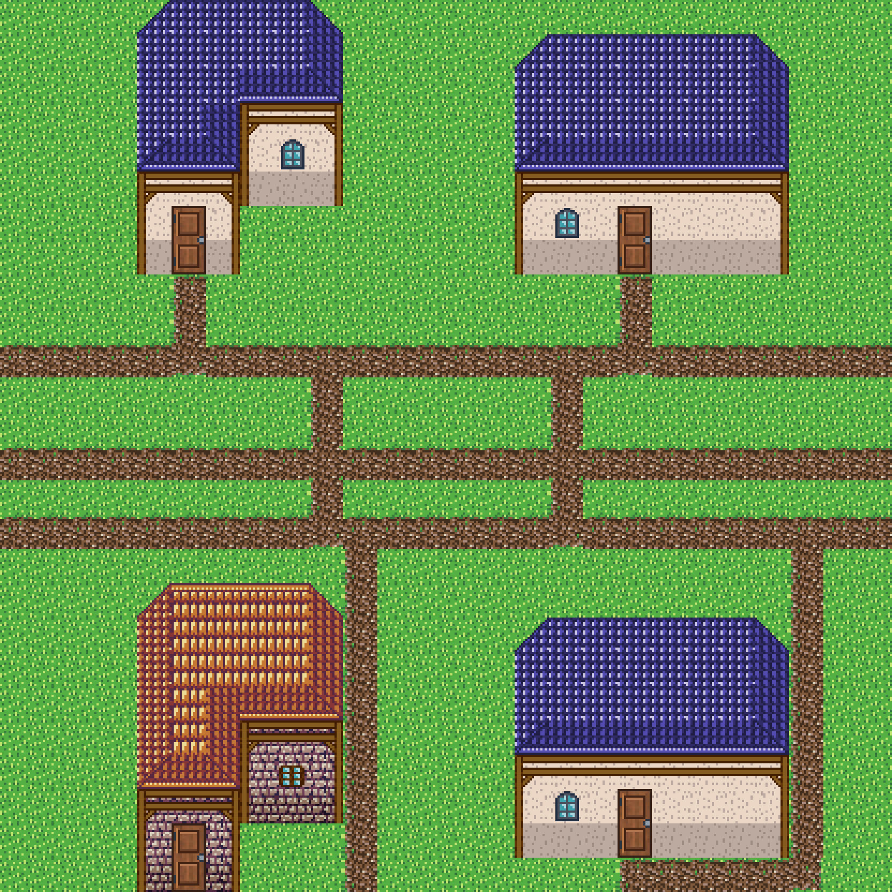
참고 위키: openwiki/editor-database.md (탭 관례) · openwiki/large-village-generation.md (별 계보의 100×100 스크립트 빌드, lot/wing/road anchor 개념) ·
openwiki/autotiles.md (앵커 격자와 금지 타일 근거) · openwiki/agent-tile-benchmark.md (하네스 정본이 채점 기준선) ·
openwiki/interior-tile-benchmark.md (메타데이터 커버리지 실측표, structural 채점 스킴).